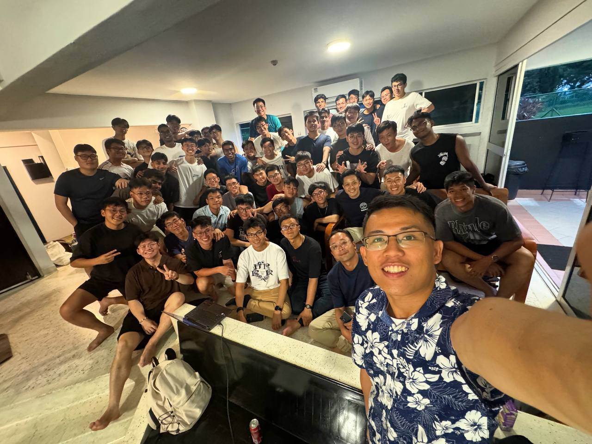

2025 - 2028
Singapore Institute of Technology and University of Glasgow
- Bachelor of Science in Computing Science
A timeline of learning
Leadership & service
Singapore Combat Engineers
I was promoted to 2SG while serving with the 38th Battalion, Singapore Combat Engineers. As Platform IC for the Bionix Launched Bridge, my role involved leadership, coordination and accountability for my platform and team.
I also helped to organise events as part of the planning team for Armoured Engineer Night 2024. I was also chosen as a trainer to train the next batch of specialist cadets in learning to operate my vehicle.

